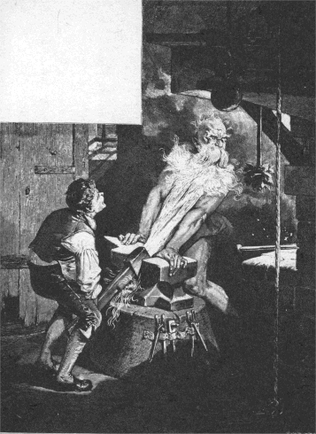

あるおとうさんが、ふたりのむすこをもっていました。にいさんのほうはりこうで、頭がよくて、なんでもじょうずにやってのけました。ところが、弟のほうときたら、まぬけで、なんにもわからないし、なにひとつおぼえることもできないというありさまでした。ですから、弟の顔を見るたびに、だれもかれもこういうのでした。
「こういうむすこがいたんじゃ、おやじさんはいつまでたってもたいへんだなあ！」
こんなわけですから、なにかすることのあるときには、いつもきまって、にいさんがやらされました。けれども、ときには、おそくなってからとか、どうかすると
夜中などに、なにかとってきてくれと、おとうさんからいいつかることもあります。そんなとき、
墓地とか、あるいはどこかおそろしい
場所をとおっていかなければならないようなばあいには、にいさんはいつもこうこたえました。
「いやだ、いやだ、おとうさん。そんなところへはいかないよ。ぞっとする。」
なぜって、にいさんはこわくてたまらなかったのです。また、夜など、
炉ばたで
身の
毛のよだつような話がでますと、きいているものは「うわあ、ぞっとする」と、よくいいます。
弟はすみっこにすわって、じぶんもその話をきいているのですが、それがなんのことやら、さっぱり
見当がつきません。
「みんな、しょっちゅう、ぞっとする、ぞっとするっていってるが、おれはちっともぞっとなんかしやしねえ。こいつは、きっと、おれにはわからねえことなんだろう。」
さて、あるときのこと、おとうさんが弟にむかってこんなことをいいました。
「おい、そのすみっこにひっこんでいる
小僧、おまえは、もうそのとおり大きく、がっしりした男になった。おまえもなにかひとつ、ならいおぼえて、じぶんでくっていくようにしなくちゃいかん。みろ、にいさんはいっしょうけんめいやってるのに、おまえときたら、まるではしにも
棒にもかからん。」
「うん、おとうさん、おれもなにかおぼえたいよ。そうだ、もしできたら、ぞっとするってことをおぼえたいな。そいつは、おれにはちっともわからねえもの。」
にいさんはこれをきいて、わらいだしましたが、心のなかでひそかに思いました。
（ああ、ああ、弟のやつは、なんて大ばかなんだ。あれじゃ、
一生かかったって、
ものになりゃしない。
三つ
児の
魂百までっていうからなあ。）
おとうさんは、ため
息をついていいました。
「ぞっとするか、そいつをおぼえるのもいいだろう。だがそんなことをおぼえたって、それではくっちゃいけないぞ。」
それからまもなく、お
寺の
役僧がこのうちへたずねてきました。そこでおとうさんは、じぶんの
心配を、この役僧に話して、弟むすこはなにをやらせてもだめで、なんにもわからないし、なにひとつ、ならいおぼえることもできないといいました。
「まあ、あなた、考えてもみてください。わたしが、なにをやってくっていくつもりだとききますとね、どうでしょう、ぞっとすることをおぼえたいなんて、とんでもないことをぬかすんですよ。」
「それだけのことなら、わたしのところでおぼえられますよ。」
と、
役僧はこたえていいました。
「まあ、そのむすこさんをわたしのところへよこしてごらんなさい。きっと、しこんであげますよ。」
おとうさんは、あの
小僧も、ちっとはしこんでもらえるかなと、考えましたので、すぐ役僧にたのむことにしました。
こういうわけで、役僧はむすこをうちにつれていきました。むすこはそこで
鐘つきをすることになりました。
それから二、三日たった、ある
晩のことです。ま
夜中ごろ、とつぜん
役僧がむすこをおこしました。そして、すぐに
寝床からおきて、
塔にのぼって、
鐘をついてこい、といいつけました。
（ぞっとするっていうのがどんなことか、きっとおぼえさせてやる。）
役僧はこう考えて、じぶんはむすこよりもひと足さきに、こっそりでかけました。
むすこが
塔にのぼって、くるりとむきなおって、いざ
鐘のつなをにぎろうとしたときです。ふと見ますと、ひびき
穴にむかいあった
階段の上に、なにやら白いものが立っているではありませんか。
「そこにいるのはだれだ。」
と、むすこがさけびました。けれども、その白いものはうんともすんともいわず、
身動きひとつしません。
「へんじをしろ。」
と、むすこがまたもやどなりました。
「さもなきゃ、きえてうせろ。この夜中に、こんなところに用はないはずだ。」
けれども
役僧は、
若者におばけだと思いこませようと思って、なおも身動きひとつせず、じっと立っていました。それを見て、若者はまたまたどなりました。
「きさま、ここでなにをしようってんだ。まともな人間なら、口をきけ。さもなきゃ、階段からつきおとすぞ。」
しかし
役僧は、なあに、口さきだけで、そんなことはできまい、と考えて、あいかわらずだまりこくったまま、まるで石ででもできているように、つっ立っていました。
若者はもういっぺんどなりつけました。しかし、それでもなんのききめもありません。そこで、こんどはいきおいよくおばけにおどりかかって、おばけを
階段からつきおとしてしまいました。おばけは十段ばかりころがりおちて、すみっこにのびたまま、うごかなくなってしまいました。
それから、若者は
鐘をついて、役僧のうちにかえりました。そして、なんにもいわずに、さっさと
寝床にもぐりこんで、またねむってしまいました。
役僧のおかみさんは、ご
主人のかえりを長いこと
待っていましたが、いつまでたっても、ご主人はもどってきません。それで、とうとう
心配になって、若者をおこして、きいてみました。
「あんた、うちのひとがどこにいるか知らない？ あんたよりもさきに、
塔にのぼったんだけどね。」
「知りませんねえ。」
と、
若者はこたえました。
「だけど、あそこのひびき
穴のむかいがわの
階段の上に、だれだか立っていましたよ。おれがいくらよんでもへんじもしないし、おりていこうともしないから、おれはどろぼうかなんかだと思って、つきおとしてやりましたよ。まあ、いってごらんなさい。そうすりゃ、
坊さんかどうかわかりますからね。もし坊さんだったとすりゃ、気のどくなことをしたなあ。」
いわれて、おかみさんがとんでいってみますと、やっぱりご
主人です。
役僧は、すみっこにへたばって、うんうんうなっていました。むりもありません。かたっぽうの足の
骨がおれてしまったのですからね。
おかみさんは役僧をかつぎおろしますと、すぐその足で、
若者のおとうさんのところへどなりこみました。
「おまえさんとこのむすこはね。」
と、おかみさんはわめきたてました。
「えらいことをしでかしてくれたよ。うちのひとを
階段からつきおとしてさ、おかげでうちのひとは、かたっぽうの足をおっちまったんだよ。あんな
ろくでなしは、さっさとうちからつれてっとくれ。」
おとうさんはびっくりぎょうてんして、すぐさまとんでいって、むすこをしかりとばしました。
「なんてえばちあたりのいたずらをするんだ。おまえは
悪魔にでもとっつかれたにちがいない。」
「おとうさん、まあ、きいとくれよ。」
と、むすこがいいました。
「おれはちっともわるかあないんだぜ。
坊さんたら、まるでわるだくみでもするやつみたいに、ま
夜中にそんなところにつっ立ってたんだ。おりゃあ、だれだかわからねえから、三べんも
注意してやって、口をきくなり、おりてくなりしろっていったんだもの。」
「ああ、おまえのおかげで、おれはとんでもないめにばかりあっている。おまえはどこかへいっちまってくれ。おまえの顔なんかもう二度と見たくない。」
と、おとうさんがいいました。
「いや、おとうさん、そいつはありがたいよ。だけど、
夜のあけるまで
待っておくれ。夜があけたら、どこかへでかけていって、ぞっとするってやつをおぼえてくるよ。そうすりゃ、おれもそいつでめしをくってくことができるってもんだ。」
「なんでもおまえのすきなことをならうがいい。」
と、おとうさんはいいました。
「わしにとっちゃ、なんだっておんなじことだ。それ、この五十ターレルをおまえにやる。これをもって、ひろい
世のなかへでていくがいい。だが、
生まれ
故郷やおやじの名まえを口にするんじゃないぞ。わしがはじをかくことになるからな。」
「わかったよ、おとうさん、だいじょうぶ、それくらいのことなら、よく気をつけてわすれねえようにするよ。」
やがて、夜があけますと、
若者は五十ターレルをポケットにつっこんで、大通りにでていきました。そして、歩きながら、ひっきりなしに、
「ああ、ぞっとしたいもんだ。ぞっとしたいもんだ。」
と、ひとりごとをいっていました。
そこへ、ひとりの男がやってきました。男は、
若者がひとりでしゃべっていることばを耳にしました。それから、こんどは、ふたりでしばらく歩いていきますと、むこうに
首つり
台が見えてきました。すると、男は若者にいいました。
「おまえさん、ほら、あそこに木があるだろう。あそこで、七人の男が
（１）なわ
屋のむすめと
結婚したとこなんだ。やっこさんたち、いまはブランブランととぶけいこをしているのさ。おまえさん、あの下にすわって、夜まで
待っていてみな。きっと、ぞっとするってことがおぼえられるだろうよ。」
「たったそれっくらいのことなら――」
と、
若者はこたえました。
「なんでもねえや。だが、ぞっとするってことが、そんなにあっさりとおぼえられるんなら、このおれのもってる五十ターレルはおまえさんにやるよ。まあ、あしたの朝、もういちどおれんとこへきな。」
そこで若者は、首つり台のところへいき、その下にすわって、夜まで待っていました。からだはこごえそうに寒くてたまりません。そこで、若者はたき火をはじめました。けれども、ま
夜中ごろには、風がばかにつめたくなってきて、いくら火をたいても、ちっともあたたかくなりませんでした。風にふかれて、首つり台にぶらさがっている
死がいが、たがいにぶっつかりあっては、ユラリユラリとゆれました。それを見て、若者は、
（おれなんか、このたき火のそばにいても寒いんだ。あんな高いところにいるやつらは、さぞ寒くて、がたがたふるえているだろうなあ。）
と、思いました。
若者は、もともと思いやりぶかい
たちでしたので、さっそくはしごをかけて、のぼっていきました。そして、ひとりずつじゅんじゅんにつなをほどいて、七人の男をみんな下におろしてやりました。それから、火をかきたてては、プウプウふいて、からだがよくあたたまるように、みんなを火のまわりにすわらせてやりました。ところが、みんなはすわったきり、
身動きひとつしません。そのうちに、
着物には火がついてしまいました。それを見て、若者は、
「気をつけろよ。でないと、もういちど上へぶらさげるぞ。」
と、いいました。
ところが、
死人は耳がきこえません。うんともすんともいわず、ぼろ着物はもえほうだいです。
若者はぷんぷん
腹をたてて、いいました。
「おまえたちがじぶんで気をつける気がないんなら、たすけてやることはできねえよ。おれは、おまえたちのおつきあいで
焼け
死ぬのはごめんだぜ。」
そこで若者は、死人どもを、またもとのようにじゅんじゅんにつるしあげました。それから、たき火のそばにすわって、ぐうぐうねこんでしまいました。
あくる朝になりますと、きのうの男がやってきて、五十ターレルをもらうつもりで、こういいました。
「どうだい、ぞっとするってのは、どんなことだかわかったかい？」
「とんでもねえ。」
と、
若者はこたえていいました。
「いったい、どうしたらそいつがわかるんだろうなあ。あそこにぶらさがってるやつらは、口をききもしねえし、それに、とんでもねえ
あほうときてやがる。なんしろ、じぶんのきているぼろ
着物がもえたって、そのままほっとくんだからなあ。」
相手の男も、このようすでは、とてもきょうは五十ターレルをもらえそうもないとみてとって、そのままいってしまいました。けれども、
「あんなやつには、まだあったことがない。」
と、いいました。
若者もふたたび歩きだしましたが、またまた、
「ああ、なんとかしてぞっとしたいもんだなあ。ああ、ぞっとしたいもんだ。」
と、ひとりごとをいいはじめました。これを、若者のうしろから
荷馬車をひっぱってきた
運送屋が耳にはさみました。そして、
「おめえさんはだれだい。」
と、たずねました。
「知らねえよ。」
と、
若者はこたえました。
「おめえさん、生まれはどこだい。」
と、
運送屋がなおもたずねました。
「知らねえよ。」
「おやじさんは、なんてんだ。」
「そいつあいえねえよ。」
「おめえさん、なにをしょっちゅうぶつぶついってんだ。」
「うん、そいつなんだ。」
と、
若者はこたえていいました。
「おれは、ぞっとするってことをおぼえてみてえんだが、だれもおしえてくれねえんだ。」
「ばかなことをぬかすなよ。」
と、
運送屋がいいました。
「さあ、おれといっしょにきな。どっか、いいとこへ
世話してやるぜ。」
そこで、若者は運送屋といっしょに歩いていきました。日がくれてから、ふたりはとある
宿屋につきました。ふたりはここにとまることにしました。若者は、へやへはいろうとして、またもや大声で、
「ああ、ぞっとしたいもんだ。ぞっとしたいもんだ。」
と、いいました。
宿屋の
主人はそれをきいて、わらいながらいいました。
「そんなことがおのぞみなら、ここにゃおあつらえむきのことがありますよ。」
「まあ、だまっといでよ。」
と、そばから宿屋のおかみさんが口をだしました。
「いままでだって、ものずきな人たちがずいぶんおおぜい、
命をうしなってしまったんじゃないか。こんなきれいな目が、二度と日のめをおがめないようにでもなったら、それこそかわいそうだよ。」
ところが、
若者はいいました。
「どんなにむずかしいことでも、おれはおぼえてみたいんだ。そのために、こうして
旅にでかけてきたんだから。」
若者はなおも主人に、話してくれとせがみました。それで、とうとう主人は、ここからあまり遠くないところに
魔法にかけられているお
城があって、そこで
三日三晩、
寝ずの
番をすれば、ぞっとするというのがどんなことだかわかるでしょう、といいました。そして、さらに話をつづけて、寝ずの番をするだけの
勇気のあるものには、王さまがごじぶんのお
姫さまをおよめにくださるというのです。ところが、そのお姫さまというのが、おてんとさまのてらすこの
世界で、いちばん美しいかたなのです。それから、お
城のなかにはたくさんの
宝ものもあって、それを
悪魔どもが番をしています。けれども、うまく
寝ずの
番をやりとおせば、その
宝ものも手にはいって、
貧乏人でもたちまち
大金持ちになれるのです。いままでにもずいぶんおおぜいの人たちがお
城にはいっていきましたが、まだひとりとしてかえってきたものはありません、と話してきかせました。
若者は、あくる朝、さっそく王さまのまえにいって、
「もしおゆるしくださいますなら、わたくしはその
魔法のかけられているお城で、
三日三晩、
寝ずの
番をいたしとうございます。」
と、もうしました。
王さまは若者をじっと見つめていましたが、若者が気にいりましたので、こういいました。
「おまえは、なんなりと三つのものをねがいでるがよい。それらのものを
城のなかにもちこむことをゆるす。だが、生きものであってはならぬぞ。」
いわれて、
若者はこたえました。
「それでは、火と、
旋盤と、それから
小刀のついた
細工台をおねがいいたします。」
王さまは、昼まのうちに、それらのものをのこらずお城のなかにはこびこませておきました。さて、日のくれかかったころ、若者はお城にでかけていきました。そして、なかのひと
間にはいりこんで、火をかんかんおこし、
小刀のついた
細工台をそばにおいて、じぶんは
旋盤の上にこしをおろしました。
「ああ、ぞっとしたいもんだなあ。だが、ここでもやっぱりだめだろう。」
と、
若者はいいました。
ま
夜中ごろ、若者はもういちど火をかきたてようと思いました。そして、火をプウプウふいていますと、だしぬけにすみっこのほうから、
「ウウ、ニャオ。おれたちゃ寒くてたまらん。」
と、さけんだものがありました。
「ばかだな、おまえたちは。」
と、若者がどなりました。
「なにをいってんだ。寒かったら、ここへでてきて、火にあたって、あったまったらいいじゃねえか。」
若者がこういいおわったとたん、大きな黒ネコが、ものすごいいきおいで、とびだしてきました。そして、若者の両わきにすわったかと思うと、火のような目玉をぎらぎらさせて、若者の顔をぎゅっとにらみつけました。
しばらくして、からだがあたたまってきますと、そのネコどもが、
「おい、きょうだい、トランプをやらないか。」
と、さそいかけました。
「やらなくってどうする。」
と、
若者がこたえました。
「しかし、そのまえに、ちょいとおまえの足を見せてくれよ。」
こういわれて、ネコどもは足のつめをのばして見せました。
「いよう、なんて長いつめをしているんだ。ちょいと
待ちなよ。まず、こいつを切ってからにしなくっちゃ。」
若者はこういいながら、ネコの
首ったまをつかんで、
細工台の上にのせると、四つ足をぐっと
ねじでしめつけてしまいました。
「おまえらの指を見たら、トランプをする気がなくなった。」
若者はこういうがはやいか、ネコどもをたたき
殺して、おもての水のなかへほうりこんでしまいました。
こうして、
若者が二ひきのネコをかたづけて、ふたたびたき火のそばにもどって、すわろうとしたときです。とつぜん、あっちのすみからも、こっちのすみからも、もえる火のくさりにつながれた黒ネコや黒犬が、とびだしてきました。しかも、その数はあとからあとからふえるばかりです。とうとうしまいには、若者が
身動きひとつすることができないほどになってしまいました。そして、そいつらは
世にもおそろしいうなり声をあげて、若者のたき火をふみつけ、ふみにじって、その火をけそうとするのです。
そのようすを若者はしばらくのあいだじっとながめていましたが、あんまり
腹がたちましたので、いきなり
細工刀を手にとって、
「とっととうせやがれ、こんちくしょうめら。」
と、さけびながら、そいつらめがけて切ってかかりました。なかにはにげてしまったのもありましたが、のこったやつらはうち
殺して、おもての池のなかにほうりこみました。
それから、
若者はたき火のそばにもどってくると、かすかにのこっている
火種から火をふきおこして、あたたまりました。こうして、すわっているうちに、たまらないほどねむくなってきて、もうどうにも目をあいていることができなくなりました。そこで、あたりを見まわしますと、かたすみに大きなベッドがありました。
「こいつはちょうどいいや。」
若者はこういいながら、そのベッドのなかにもぐりこみました。ところが、目をつぶろうとしたとたん、ベッドがひとりでにうごきだして、お
城じゅうをぐるぐるまわりはじめました。
「うまいぞ、うまいぞ、もっと走れ、もっと走れ。」
と、
若者がいいました。
するとベッドは、まるで六
頭の馬にでもひかれているように、
敷居をこえ、
階段をのぼったりおりたりして、ごろごろとうごきつづけました。そのうちとつぜん、ベッドがくるっとひっくりかえったかと思うと、いきなり若者の上に山のようにのしかかってきました。けれども、若者もまけてはいません、ふとんやまくらをはねとばして、その下からぬけだしました。そうして、
「もう、だれがのるもんか。」
と、いいすてて、こんどはたき火のそばにねころぶと、
夜のあけるまでねむりこんでしまいました。
あくる朝、王さまがやってきました。王さまは、
若者が
床の上にねているのを見ますと、おばけのために
殺されてしまったのだろうと思いました。それで、王さまは、
「りっぱな男なのに、おしいことをしたものだ。」
と、いいました。
若者はこれをききますと、むっくりおきあがって、
「まだやられちゃおりませんよ。」
と、もうしました。
王さまはびっくりしましたが、でも心のそこからよろこんで、いったいどんなめにあったのだ、とたずねました。
「うまくいきましたよ。」
と、
若者はこたえていいました。
「これで、まずひと
晩はすんだわけですが、あとのふた晩もなんとかなるでしょう。」
若者が
宿屋の
主人のところへかえってきますと、主人もびっくりして目をまんまるくしました。
「わたしゃ、あんたの生きた顔を二度と見ようとは思いませんでした。」
と、
主人はいいました。
「どうです、ぞっとするってことが、どんなことだかわかりましたかね。」
「だめさ。なにもかもむだだ。ああ、だれかおしえてくれる人はないかなあ。」
二日めの
晩も、
若者はその古いお
城にでかけていきました。そして、たき火のそばにすわって、またいつものように、
「ああ、ぞっとしたいもんだ。」
と、口ぐせになっていることばをいいはじめました。
ま
夜中ちかくになりますと、ガタガタ、ドンドンというもの音がしだしました。さいしょのうちはおだやかでしたが、それがだんだんはげしくなるのです。そのうちに、ちょっとしずかになりましたが、さいごにはものすごいさけび声とともに、人間のからだが
半分、えんとつをつきぬけて、若者の目のまえにおちてきました。
「おい。」
と、若者がどなりました。
「もう半分いるぞ。これじゃたりないじゃないか。」
すると、またもやあたりがさわがしくなって、ドタバタ、ギャアギャアやったあげく、あとの半分もおちてきました。
「ちょっと
待ってろよ、もうすこし火をおこしてやるからな。」
と、
若者がいいました。
若者が火をふきおこして、ふりかえってみますと、どうでしょう。さっきの
半分ずつのからだが、いつのまにかつながって、おそろしい男が若者の
席にがんばっているではありませんか。
「おい、じょうだんはよせ。そのこしかけはおれのだぞ。」
と、若者はいいました。
すると、その男は若者をつきのけようとしましたが、若者もだまってはいません。しゃにむにその男をおしのけて、またもとの席にすわりました。と、こんどは、あとからあとから、たくさんの人間がおちてきました。そいつらは
死人の
骨を九つと、されこうべをふたつもってきて、
金をかけて、
九柱戯（ボーリングににたあそび）をはじめました。若者もやってみたくなって、
「どうだね、おれもいれてくれないかい。」
と、たずねました。
「いいとも、金があるんならな。」
「金ならうんともってるぜ。だが、その
球はまんまるくないな。」
と、若者はこたえました。
そうして、若者はされこうべをとって、
旋盤にかけ、まるくけずりました。
「さあ、こんどは、ずっとよくころがるぜ。そうれ、うまくいく。」
と、若者はいいました。
それから、
若者はその男たちといっしょに
九柱戯をやって、
金をすこしそんしました。ところが、十二時の
鐘がなったとたん、なにもかもが目のまえからきえてなくなってしまいました。そこで若者は、ねころんで、ぐっすりとねむりました。
あくる朝、王さまがやってきて、ようすをきこうとしました。
「こんどは、どんなぐあいだったな。」
と、王さまがたずねました。
「
九柱戯をやって、
銅貨を二つ三つそんしました。」
と、
若者はこたえました。
「では、ぞっとしなかったのかね。」
「とんでもない、すっかりゆかいにあそんでしまいましたよ。ぞっとするってのが、どんなことだか知りたいんですがねえ。」
と、若者がいいました。
三日めの
晩も、若者はまた
旋盤にこしかけて、いかにも
腹だたしそうに、
「ああ、なんとかしてぞっとしてみたいもんだ。」
と、いいました。
夜がふけたころ、六人の大男が
棺おけをひとつかつぎこんできました。すると、若者は、
「ははあ、これは、きっと二、三日まえに
死んだおれのいとこだな。」
と、いいながら、指であいずして、よびかけました。
「おい、こっちへこいよ、こっちへこいよ。」
大男たちは
棺を
床におろしました。
若者はそのそばへいって、ふたをとってみました。すると、なかにはひとりの
死人がねていました。顔にさわってみますと、まるで
氷のようにつめたいのです。
「
待ってなよ、いまちょっとあっためてやるぜ。」
若者はこういうと、火のそばへいって、じぶんの手をあたためてから、その手を死人の顔の上にのせてやりました。けれども、死人はあいかわらずつめたくて、ちっともあたたかくはなりません。そこで、若者は死人を
棺からだして、火のそばへつれていきました。そして、じぶんがそこにすわって、そのひざに死人をのせました。そうして、
血がめぐりだすように、死人の
両腕をこすってやりました。しかし、それでも、なんのききめもなさそうです。そのとき、ふと、
「ふたりでいっしょに
寝床にねれば、おたがいにあったまるもんだ。」
と、思いつきましたので、死人をベッドのなかにねかして、ふとんをかけてやりました。それから、じぶんもいっしょにならんでベッドのなかにはいりました。
しばらくすると、死人もあたたまってきて、うごきだしました。
「そうれ、みろよ、あっためてやってよかったろう。」
と、若者はいいました。
ところが、その
死人がむっくりとおきあがって、
「やい、こんどは、きさまをしめ
殺してやるぞ。」
と、どなりました。
「なにっ、それがおまえの
恩がえしか。さっさと
棺おけのなかにもどりゃあがれ。」
若者はこういうといっしょに、死人をもちあげて、棺のなかにほうりこみ、ふたをしてしまいました。すると、さっきの六人の男がでてきて、またその棺をどこかへはこんでいきました。
「ぞっとしそうもないなあ。」
と、若者はいいました。
「ここにいたんじゃ、
一生かかったって、おぼえられやしない。」
そのとき、またひとりの男がはいってきました。その男はほかのだれよりも大きくて、みるからにおそろしい顔つきをしています。もう年をとっていて、白い長いひげをはやしています。
「おい、
小僧、ぞっとするってのがどんなことか、いますぐおれがおしえてやる。きさまの
命はもらったからな。」
と、その男が大声にいいました。
「そうあっさりとやられてたまるか。おれだってだまっちゃいねえぞ。」
と、若者がいいました。
「よし、ふんづかまえてくれるぞ。」
と、その
怪物がいいました。
「おっと、あわてなさんな。そんな大きな口をきくんじゃねえよ。おれにだって、おまえぐらいの力はあるんだぜ。いや、もっと強いかもしれねえ。」
「そのお手なみを見せてもらいたいもんだ。」
と、じいさんがいいました。
「もし、きさまがわしよりも強かったら、きさまをゆるしてやる。さあ、こっちへこい、力くらべだ。」
じいさんはくらい
廊下をいくつもとおって、かじ
場の火のそばへ
若者をつれていきました。そして、そこにあったおのをにぎって、たったひと
打ちで
かなしきを
地面のなかにめりこませてしまいました。
「そんなことなら、おれのほうがもっとうめえ。」
若者はこういって、べつの
かなしきのところへいきました。じいさんは
見物するつもりで、若者のそばにならんで立っていました。白いひげは長くたれていました。そのとき、若者はおのをにぎって、ただひと打ちに
かなしきをうちわり、じいさんのひげもそのわれめにいっしょにはさみこんでしまいました。

「さあ、どうだ、
死ぬのはおまえだぞ。」
と、若者はいいました。
それから、
若者は
鉄の
棒をつかんで、めちゃめちゃにじいさんをうちのめしました。さすがのじいさんも、とうとう
泣きだして、どうかうつのはもうやめてください、そのかわりお
金をたくさんさしあげますから、としきりにたのみました。そこで若者はおのをひきぬいて、じいさんをはなしてやりました、すると、じいさんは若者をつれて、またもとのお
城にもどり、
地下室にはいって、
金貨のぎっしりつまった三つの
箱を見せました。そして、
「このうちのひとつは
貧乏人に、もうひとつは王さまにあげますが、あとのひとつはあなたのものです。」
と、いいました。
そうこうしているうちに、十二時の
鐘がなりました。と、そのとたんに、ばけもののすがたがきえうせてしまい、
若者はまっくらやみのなかに、ただひとりとりのこされました。
「なんとかぬけだせそうだぞ。」
若者はこういって、手さぐりしはじめました。そのうちに、ようやく道を見つけだしました。それから、もとのへやにもどって、またたき火のそばでねむりこんでしまいました。
つぎの朝になりますと、王さまがやってきて、
「ぞっとするというのがどんなことか、こんどはおぼえたろうな。」
と、いいました。
「いいえ、とんでもございません。」
と、
若者はこたえていいました。
「
死んだわたしのいとこがまいりました。それから、長いひげをはやした男もまいりました。そいつは、
地下室でたくさんの
金を見せてくれました。でも、ぞっとするというのがどんなことかは、だれもおしえてはくれませんでした。」
それをきいて、王さまはいいました。
「おまえはこの
城の
魔法をといてくれた。わしのむすめを、
妻としておまえにやるとしよう。」
「それはまことにありがたいことですが。」
と、
若者はこたえました。
「しかし、ぞっとするというのがどんなことか、わたしにはいまもってわかりません。」
こうして、
金貨が
地下室からはこびだされて、ご
婚礼の式があげられました。
わかい王さまは、お
妃さまをたいそうかわいがり、心から
満足していました。けれども、あいもかわらず、
「ああ、ぞっとしたいものだ。ぞっとしたいものだ。」
と、口ぐせのようにいっていました。しまいには、お妃さまは、これをきくのが、いやでいやでたまらなくなりました。
ところが、お妃づきの
侍女が、
「いいことがございます。あたくしが、ぞっとするということを、王さまにおしえてさしあげましょう。」
と、もうしました。
侍女は、お
城の
庭をながれている小川のところへでていきました。そして、おけにドジョウをいっぱいとってこさせました。夜になって、わかい王さまがねむっていますと、お
妃さまは侍女にいわれたとおり、王さまのかけぶとんをそっとはいで、ドジョウのはいっているおけいっぱいのつめたい水を、王さまの頭からザアッとかけました。とたんに、たくさんのドジョウが王さまのからだのまわりをピチャピチャはねまわりました。すると、王さまは目をさまして、さけびました。
「うわあ、ぞっとするわい。ぞっとするわい。これではじめてわかったよ、ぞっとするということが。」
（１）なわ屋のむすめと結婚したというのは、首つりの罰をうけたことです。